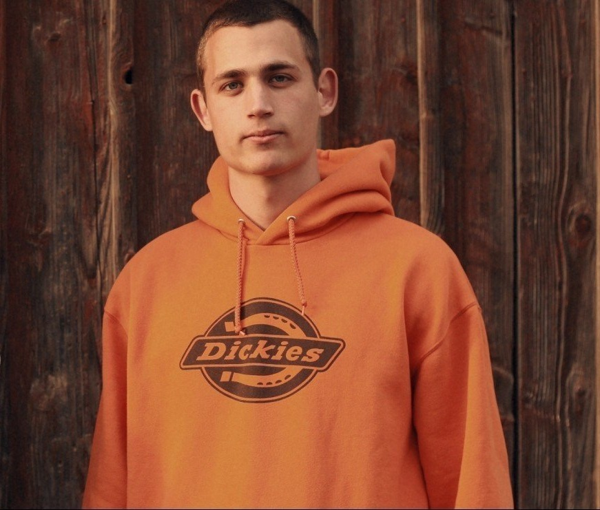

Fedusiv Dmytro
Contacts
- Phone: +38 (099) 1191925
- E-mail: asalesbox@gmail.com
- Facebook
- Date of Birth: 19.11.1990
Summary
I am an open-minded, easy-going and sincere person who loves to work in a team and appreciates a good atmosphere
between coworkers.
Able to work to my full potential, honestly and productively.
Goal and the result-oriented person who enjoys communicating with people and loves giving them positive emotions.
Expirience
TV & Radio Company "Prostir" (2012 - 2017)
Position: Mounter Internet network
Responsibilities:
- Connecting new customers to the Internet
- Construction, repair and maintenance of the cable network
- Elimination of damages and emergency situations
- Customizing customer equipment
Hotel "DUK" (2018-2020)
Position: Handyman
Responsibilities:
- Security monitoring
- Maintaining the proper condition of the territory
- Minor home repairs
- Communicate with guests and provide the necessary information
Personal Qualities
- communicative
- easy-going
- responsible
- stress-resistant
- quick learner
- multitasking
- attentive to detail
Education
Lviv College of the State University of Telecommunications
Degree of education - Specialist
Languages
- Ukrainian - Native
- Russian - Fluent
- English - Intermediate